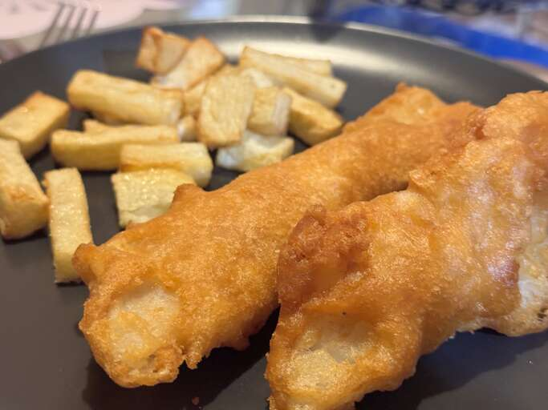

Home
Crispy Beer Batter Fish and Chips

A crispy recipe of fish and chips with some beer to make the batter taste better and make it crunch in every munch!
This recipe can be made for lunch, dinner or to celebrate your birthday!
Ingredients
Batter:
- 1 cup self-raising flour
- 2 tbsps rice flour
- 1/4 tsp baking powder
- 1 cup lager-style beer, or more if needed
Fish:
- 4 cod fillets, fully thawed if frozen
- 2 tbsps rice flour or more if needed
- salt to taste
- 1 quart vegetable oil for frying
Steps
- Start the batter: Whisk self-rising flour, rice flour and baking powder together in a bowl. Freeze until ready to use.
-
Make the fish: Pat cod as dry as possible, then cut lengthwise into eight 1-inch-thick strips. Place rice flour on a plate and season with salt. Dust cod lightly with the rice flour mixture
and shake off any excess. Cover a plate with crinkled foil to make a quick drying rack; place cod on top.
-
Heat oil in a deep-fryer to 190C (Or 375 F)
-
Finish the batter: remove flour mixture from the freezer. Pour in the beer and whisk
until the batter's consistency is of a thick pancake batter, add more beer as needed
-
Dip floured cod into the batter to coat; lift out and let excess drip off.
-
Fry cod in batches until golden brown, dunking occasionally if needed
3 to 4 minutes. Drain on paper towels. Serve immediately.